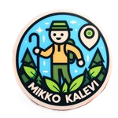

Geokätkötilastot käyttäjälle:
[Ei käyttäjää]
Päivitä
Tyhjennä
Navigointi:
*
T/D 2025
T/D full
T/D KK
T/D KK/PV PGC
VV / tyyppi
*
Päivä läydöt
*
Vuosikalenterit
Maakunnat
*
Kuntakartat
Tripletti
Graticule
FTF
Miitti
Iso
*
Jasmer
T/D 2025
Takaisin ylös
T/D full
Takaisin ylös
T/D Kuukaudet
Takaisin ylös
Tammikuu
Helmikuu
Maaliskuu
Huhtikuu
Toukokuu
Kesäkuu
Heinäkuu
Elokuu
Syyskuu
Lokakuu
Marraskuu
Joulukuu
T/D kk/päivät PGC
Takaisin ylös
Linkki chekkeriin
Löydöt vuosi / tyyppi
Takaisin ylös
Päivä läydöt
Takaisin ylös
Vuosikalenterit
Takaisin ylös
Maakunnat
Takaisin ylös
Päijät-häme
Kymenlaakso
Kanta-häme
Varsinais-Suomi
Uusimaa
Kuntakartat
Takaisin ylös
Yleis kartta
Tradi kartta
Multi kartta
Mysse kartta
Öörtti kartta
Virtu kartta
Tripletti kuntakartta
Takaisin ylös
Tripletti kartta
Graticule
Takaisin ylös
FTF Kuntakartta
Takaisin ylös
Miitti Kuntakartta
Takaisin ylös
Iso kuntakartta
Takaisin ylös
ISO kuntakartta linkeillä
Jasmer
Jasmer tradi
Jasmer multi
Jasmer mysse
Versio 30 (muokattu)